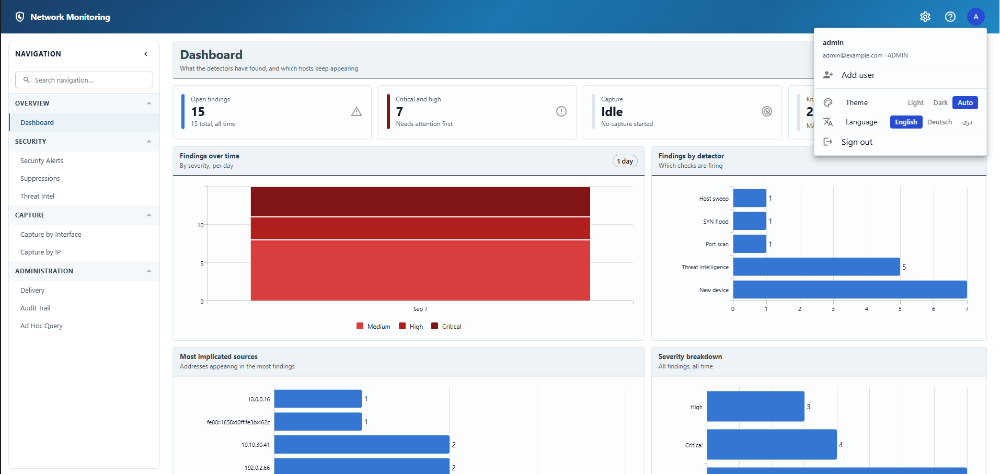
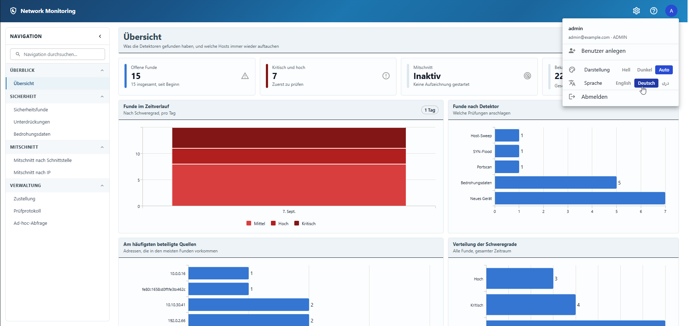
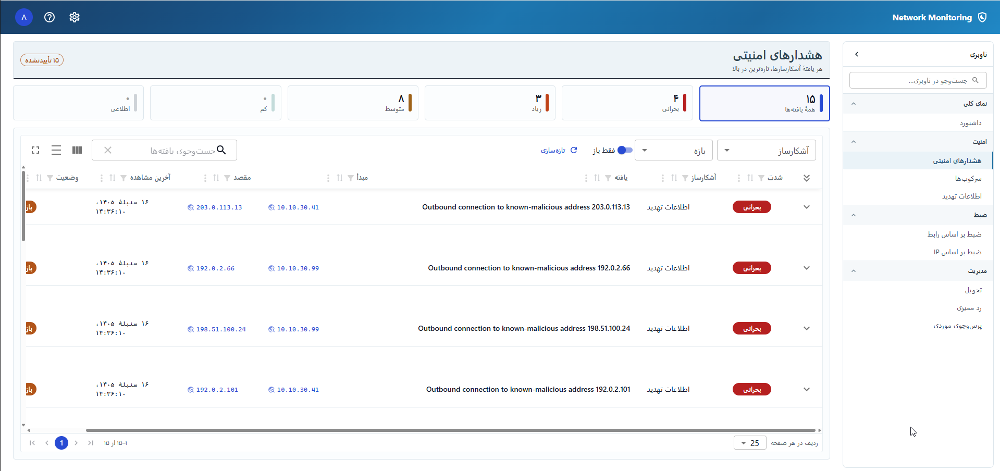

Language
English, German and Dari — switched from the account menu, and applied to findings as well as to the interface around them.
Switching language
Open the account menu in the top-right corner of the header. The Language row holds three buttons, each labelled in its own language: English, Deutsch and دری.
The page changes as you click, without reloading and without closing the menu — which is deliberate, because for Dari the change includes the whole layout flipping, and that is worth seeing happen rather than arriving at.

Each language is named in itself rather than translated. Somebody who has landed in a language they cannot read needs to find their own, and the one word they can be relied on to recognise is its own name.
What it changes
| Translated | Left as it is |
|---|---|
| Every label, button, column heading and message in the interface | Addresses, ports, MAC addresses and protocol names — you need to be able to paste these into a firewall rule or search for them |
| The findings themselves — the title and the "What this means" paragraph on every alert | Whatever the database or the capture driver said when something failed. Those sentences come from software this application does not control |
| Dates, times and numbers, in the conventions of the language you chose | The name of the product, and environment variables such as
INTEL_FEEDS that an operator searches for |
Dates are the part most likely to surprise you: choosing Dari switches them to the Solar Hijri calendar with Afghan month names, because that is the calendar the language is read in. It follows the language you picked here, not your browser's own setting, so the whole page agrees with itself.

Findings written before this feature existed
An alert stores which finding it is rather than a finished English sentence, and the sentence is written out in your language when you open it. That only applies to findings raised since the upgrade that added languages.
Older alerts kept the English sentence they were originally stored with, and there is nothing to translate them from — the words are all that was saved. So an installation that has been running for a while shows a mix for a time: older findings in English, newer ones in the language you chose. It resolves on its own as older findings age out.
Right-to-left
Dari is written right to left, so choosing it moves the navigation to the right, mirrors the layout, and reverses the reading order of every row.

Addresses stay in the order you would type them. 192.168.1.10 reads left to
right inside a right-to-left sentence, which is what the surrounding text is arranged to
allow — an address whose parts were reordered to match the paragraph would be a
different address.
Where the choice is remembered
- The switch in the account menu applies to this browser and is remembered on this device.
- Your account also carries a language, chosen when the account was created. It is what you get on a device where you have not used the switch.
- Nothing is shared between people: changing your own language does not change anybody else's.
Alert emails and chat messages are not affected. They go to a shared address or channel rather than to a person, so there is no one reader whose language they could follow. They are sent in English, which is a setting for whoever installed the server rather than a choice on this page.
- Any signed-in account can switch language at any time. It changes nothing for anyone else, and needs no permission.